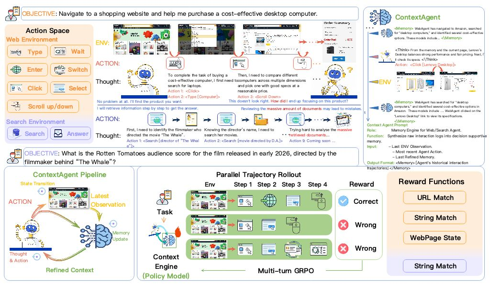

|
Blog Home / CV / Scholar / LinkedIn Notes on research, systems, and experiments. This section is intentionally lightweight for now. |
Posts |

|
"Spiral of Silence" and the pitfall of AI search
March 1, 2025 A short essay on social intelligence, answer engines, and why AI search can compress diversity of thought if it only returns the average view. |
|
Cover image
|
How to design stable RL recipes at scale?
Draft placeholder Reserved for a future technical blog on RL science and its material boundaries, including stability, sample efficiency, and scaling practice. |
|
Figure
|
Why AI is bad at long horizon causal inference?
Draft placeholder Reserved for blog notes on long-horizon reasoning, evaluation, benchmark design, why it is hard, and how to hack them. |
|
 |
Self-play, context, and environment design in RL
Draft placeholder Reserved for notes on self-play, context and environment design in RL, and practice from Currents computer-use-agent tasks. |